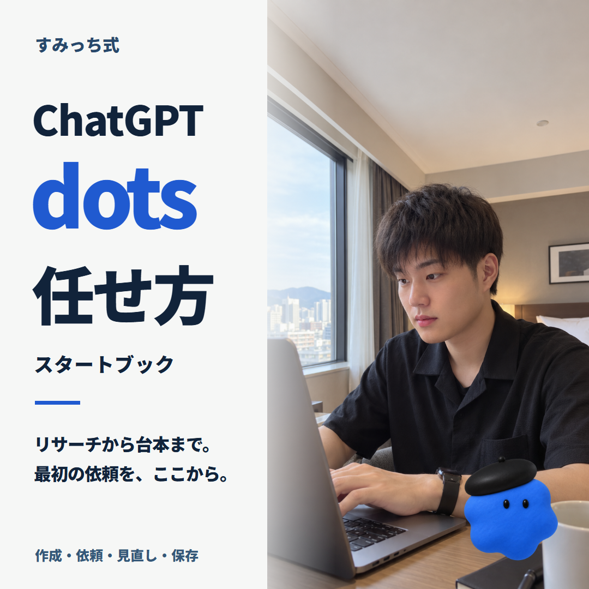
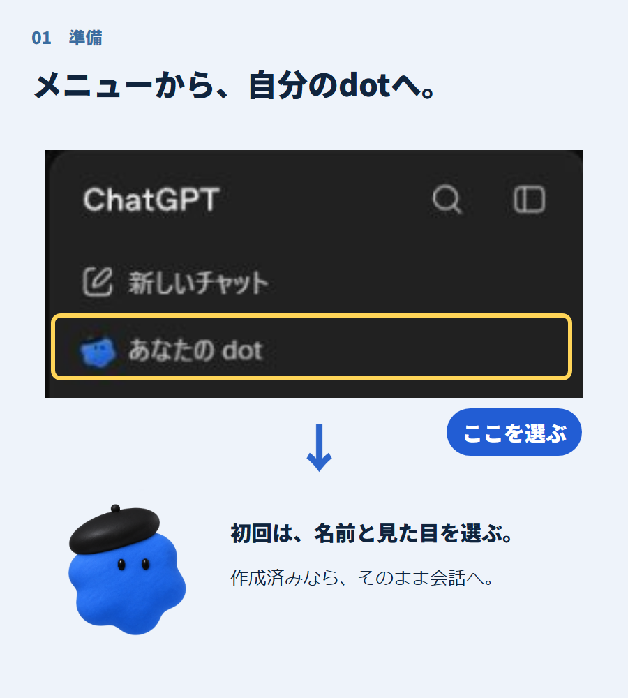
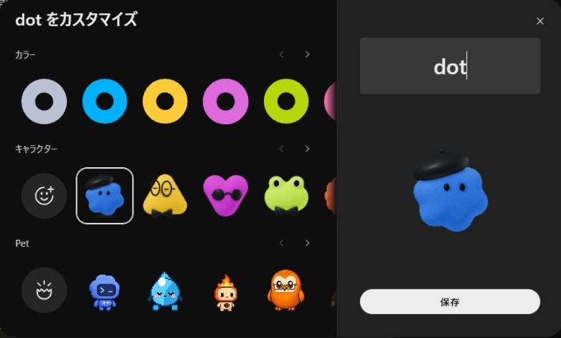
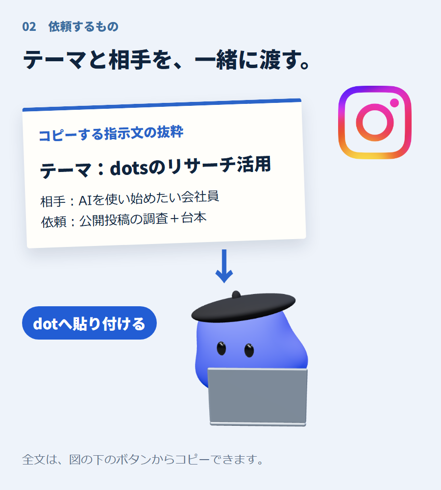
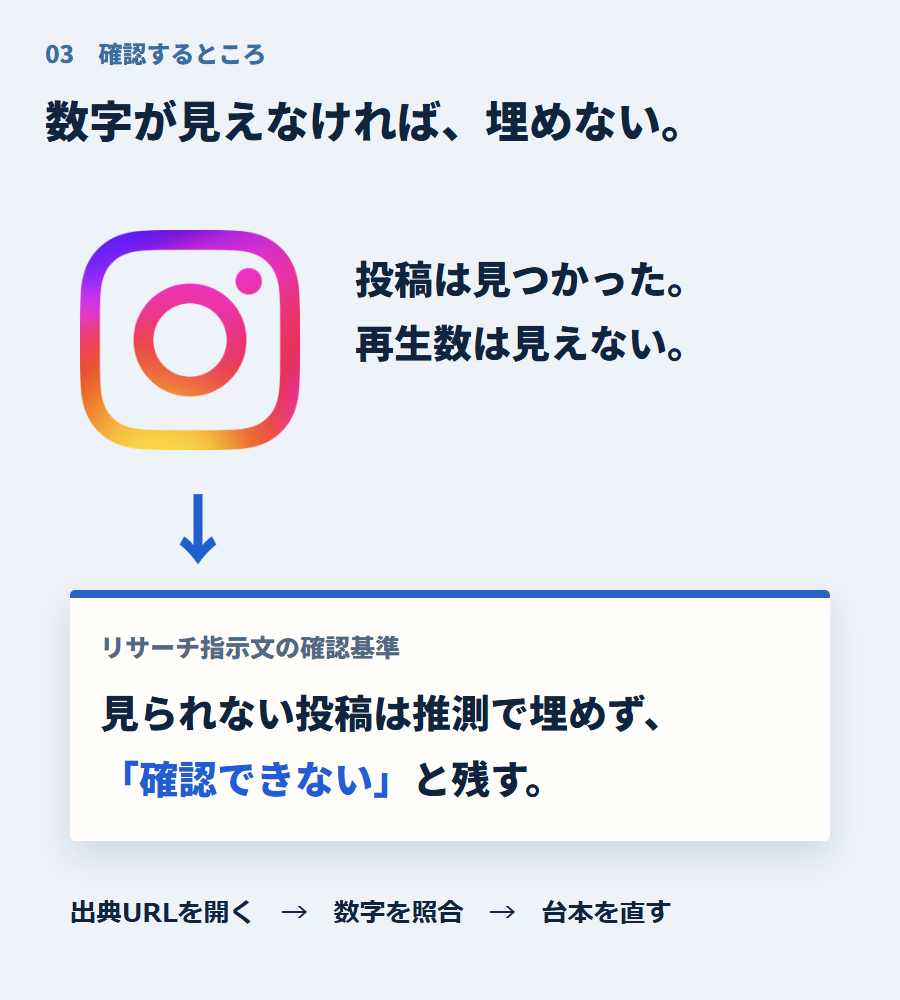
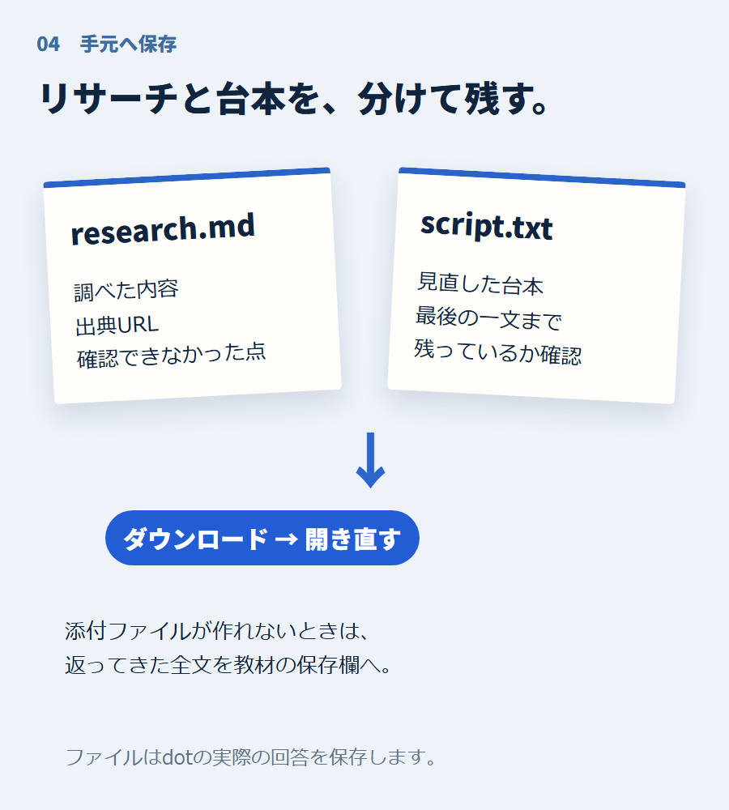

作業できる時間を増やす前に。リサーチと台本を、
dotsに任せてみる。
ネタ探しで止まる時間を、台本づくりへ。リサーチと下書きを、一つの依頼でつなぎます。
僕はリサーチから台本、動画制作まで任せています。まずは、下書きから試してみてください。
先に、使える条件を確認
Pro、Business Premiumなど対象プランで順次提供されています。表示されない場合は公式の対象条件と提供状況を確認してください。スマホは最新版アプリを使います。モバイルWebには対応していません。
料金・利用枠は、dotとの会話と、WorkやCodexへ委任した作業で扱いが異なります。2026年11月18日以降の課金開始に関する案内もあるため、利用前に公式ヘルプの現在の表示を確認してください。
OpenAI公式の対象条件・料金を確認「あなたのdot」を開く。

名前と見た目を選ぶ初回の画面も、下で確認できます。
ChatGPTでdotsを開く初回のカスタマイズ画面を見る

「何を、誰に向けて」を渡す。

テーマと対象を自分の発信に変えて、dotの会話へ貼り付けます。
指示文の全文
InstagramでAI活用を発信するためのリサーチと台本の下書きをお願いします。
対象は、会社の仕事と両立しながらAIを使い始めたい人です。
今回は「ChatGPTのdotsにリサーチを任せる方法」を扱います。
まず、OpenAIの公式情報を確認してください。そのうえで、公開されているInstagramの関連投稿を3本まで調べてください。
各投稿のURL、発信者、確認できた投稿日、冒頭の言葉、見せている具体例、コメントで見える疑問を表にしてください。
再生数やコメント数は、実際に確認できた値だけ書いてください。見られない投稿は推測で埋めず、確認できないと書いてください。
見つけた投稿の言い回しをそのまま写さず、視聴者が知りたい問いを3つ整理してください。
次に、リサーチを基に45〜60秒を目安にした台本の下書きを1本作ってください。冒頭→具体例→手順→注意点の順で、話せる文章にしてください。
公式に確認できる事実、他の投稿の内容、提案を分けてください。収益や完全自動化は保証しないでください。
投稿・送信・公開はしないで、リサーチ表と台本を僕の確認用に見せてください。追加課金が必要な操作も、実行前に確認してください。
メールや経費も任せたい場合
必要な情報だけを渡し、外部アプリは権限を確認してつなぎます。スマホはdotのプロフィールから「カスタマイズ」→「プラグイン」で確認できます。
指示文の全文
経費の整理とメールチェックを手伝ってください。
僕がこの会話で渡した領収書・明細・メールだけを対象に、日付、相手、金額、対応期限、確認が必要な点を一覧にしてください。
税務上の区分や経費にできるかを勝手に確定せず、不明点は確認事項にしてください。
メールは要点と返信の下書きまでお願いします。送信、会計ソフトへの登録、購入、支払いは実行しないでください。
接続が必要な場合は、見る情報と必要な権限を先に教えてください。
出典を開いて、台本を直す。

直したい点は、同じ会話で伝えます。
指示文の全文
今回の「ChatGPTのdotsにリサーチを任せる方法」の台本を見直してください。
確認できた公式情報と各投稿の出典に戻り、根拠のない数字や言い切りを直してください。
冒頭で何ができる話か分かるようにしてください。途中で操作名が出たら、どこを開くかも一言添えてください。
他人の言い回しを写している箇所があれば、同じ疑問に答える自分の説明へ直してください。
変更した箇所と理由を先に見せ、その後に台本全文を出してください。投稿・送信・公開はしないでください。
任せる範囲と、止める場所
調査と下書きまでを依頼し、投稿・送信・購入は実行前に確認するよう伝えます。アプリ連携やPCへの接続が必要なら、何を扱うか確認してから進めます。dotのプロフィールで作業状況を確認でき、一時停止もできます。
見直した台本を、手元に残す。

保存用の指示文を送り、返ったファイルを開いて確認します。
指示文の全文
この会話で確定した「ChatGPTのdotsにリサーチを任せる方法」のリサーチ表と台本を保存してください。
リサーチ表には出典URL、確認できた情報、確認できなかった情報を残してください。
ファイル名は research.md と script.txt にしてください。ファイル作成が可能なら、ダウンロードできる形で添付してください。
作成できない場合は、各ファイルに保存する全文を別々のコードブロックで出してください。リンクを作ったふりはしないでください。
投稿・送信・公開はしないでください。
ファイルが作れないときの保存欄
dotが出したresearch.mdまたはscript.txtの全文を貼り付け、種類を選んで保存できます。
次は、任せる工程を一つ増やす。
台本まで進んだら、使う素材・尺・参考動画を渡して、動画制作の依頼へつなげられます。最初から全部を任せるより、どこまでできたかが分かる状態で広げてみてください。
空いた時間で何を作り、誰に届けるか。そこまで考えたい方へ、AI活用と収益化の教材をまとめています。